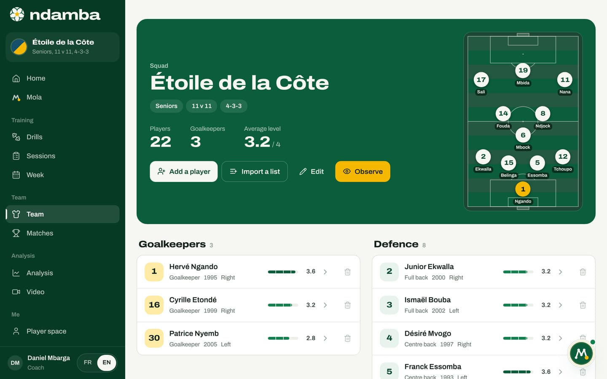
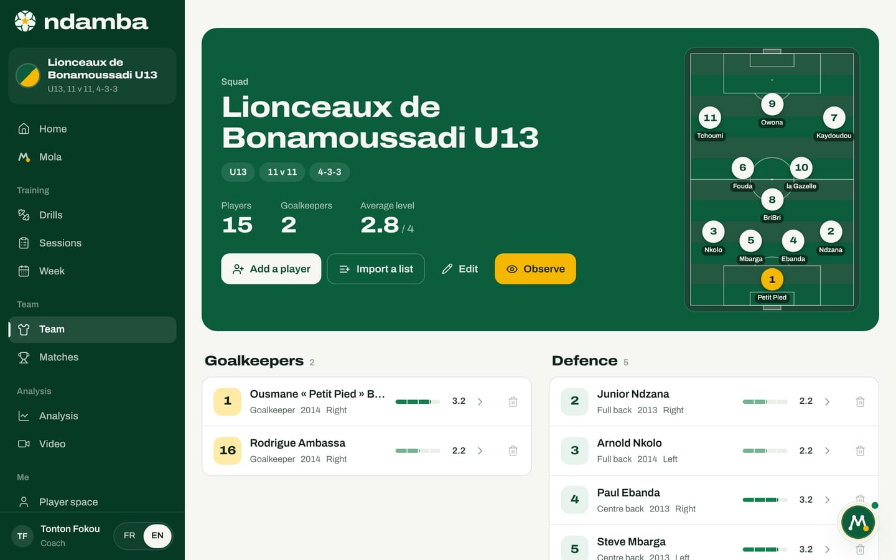
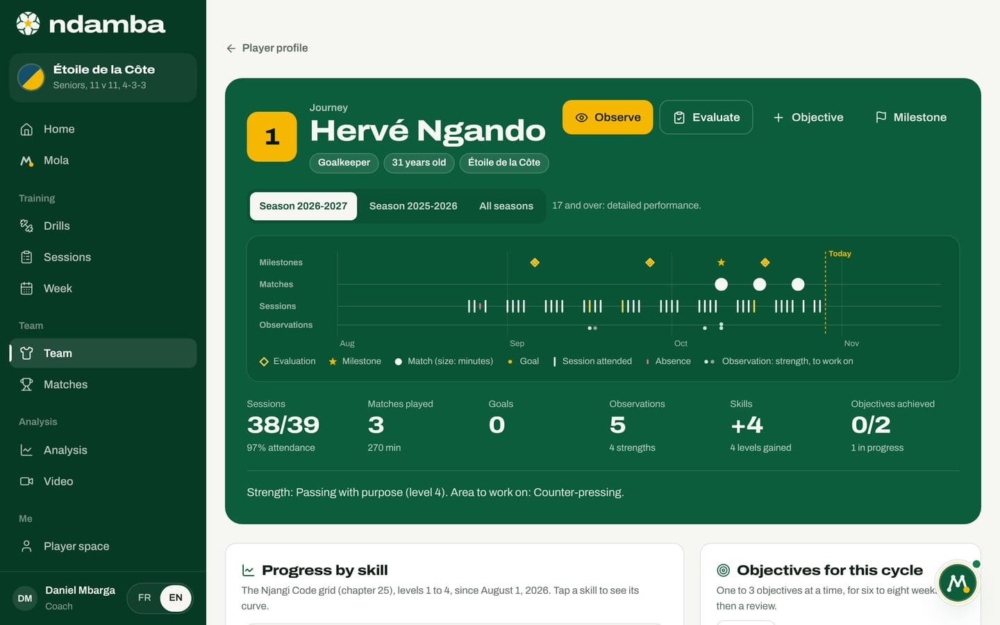
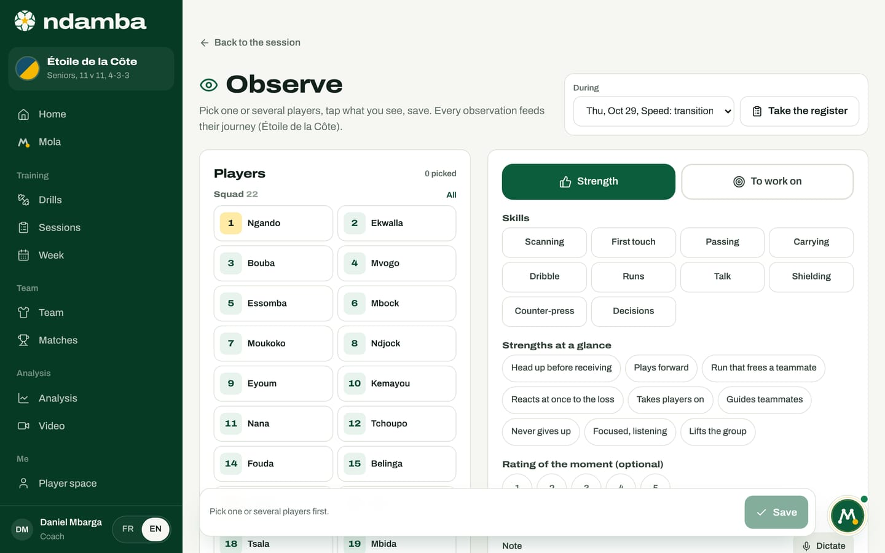

The squad and the player file
The team’s squad, each player’s file and ten skills, the player’s journey season after season, and the Observe screen that feeds that journey in a few taps.
10 min read
In many clubs and academies, a player’s story lives in the coach’s memory and in a notebook. It disappears when the coach leaves, when the child moves up an age group, or when the notebook gets caught in the rain. Ndamba starts from the opposite idea: every player has a file, every session and every match leaves a trace in it, and that trace follows the player from one season to the next. This is the continuity this guide keeps coming back to, applied to a single player. This chapter covers the squad, the player file, the journey and the Observe screen.
The squad at a glance
Open Team in the menu, under the Team group (on a phone, it sits under the More tab). The top of the page is a green plate with the team’s name: the word Squad, the age group, the format (11 v 11, for example), the base formation, and three numbers. Players and Goalkeepers count the squad; Average level is the average, out of 4, of the skills that have been rated, leaving out players who have never been rated.
Four buttons do the daily work: Add a player, Import a list, Edit (the team) and Observe. On a large screen, a small pitch shows the lineup Ndamba would suggest in your formation, using the same logic as the Pick automatically button in chapter 11.


Below the plate, players are sorted into four lines: Goalkeepers, Defence (centre backs and full backs), Midfield (pivots, central and attacking midfielders) and Attack (wingers and strikers), in shirt number order. Each row shows the number (on a yellow background for a goalkeeper), the name, the position, the year of birth, the stronger foot and a level bar out of 4, or Not rated. Tap the row to open the file; the bin icon removes the player. If you coach several teams, a selector at the top of the plate switches the team shown across the whole app.
Create and set up the team
With no team yet, the page offers Create the team. The New team window asks for the Team name, the Age group (U7 to U20, or Seniors), the Format (5 v 5 up to 11 v 11) and the Base formation, which Ndamba will suggest for every new match (the full list is in chapter 11). Edit reopens the same window, titled Edit team.
Add the players
One player at a time:
- Tap Add a player.
- Fill in Name, the only required field. A nickname written in quotation marks, such as "Petit Pied", becomes the shirt name on the pitch and in Observe; otherwise Ndamba uses the last word of the name.
- Enter the Number, from 0 to 99. If it is already used, Already taken warns you without blocking.
- Choose the Position: Goalkeeper, Centre back, Full back, Pivot, Central midfielder (the default), Attacking midfielder, Winger or Striker.
- Add the Year of birth and the Stronger foot, both optional. The year of birth gives the player’s age, and the age decides what the journey shows.
- Tap Add, or Add and continue to enter the next player without closing the window (the position is kept).
The whole list at once: tap Import a list and paste one name per line, the same list you already send on WhatsApp. The shirt number is optional, at the start of the line ("8 BriBri", "#8 BriBri") or at the end. Choose a Position for everyone, check the preview, then tap the button that counts the players, for example Import 15 players. You can then adjust each position from the player’s file, with Edit.


To remove a player, tap the bin on their row, or Remove from squad in their file, then confirm with Remove. The player leaves the squad, along with the lineup, the bench and the armband of every match not yet played. Actions already tagged stay in the reports. Removal cannot be undone, and the player’s journey is no longer shown afterwards: if in doubt, keep the player.
The player file
At the top of the file: the number, the name, the position, the year (Born 2013, for example), the stronger foot and the Average out of 4, with the Edit and Remove from squad buttons.

The file reads in six blocks.
The season’s journey. A green plate, for example "Journey, season 2026-2027", sums up the current season on a small timeline and in four numbers: Sessions (attendance out of registers taken), Matches played (with the minutes), Observations and Objectives, the number of objectives in progress. It leads to Observe and Open the journey.
The ten skills. This is the grid from chapter 25 of The Njangi Code. Each skill has its definition and four levels: 1 Discovering, 2 Building, 3 Secure, 4 Benchmark. Tap a level to rate, tap it again to clear it; Show the grid unfolds the description of all four levels. The rule is written on the screen: rate what you saw in game situations over several sessions, not what you hope for.
| Skill | What you look at |
|---|---|
| Scanning | Looking around before receiving |
| Directional first touch | Receiving the ball into open space or into the next action |
| Passing with purpose | A pass that serves one of the five intentions, to the right teammate at the right pace |
| Carrying | Moving forward with the ball to progress or draw an opponent, head up |
| Njangi dribble | Dribbling to draw, pin, then release or beat |
| Runs for others | Moving without the ball to receive or to free a teammate |
| Communication | Short, useful information at the right moment |
| Ball protection | Keeping the ball under pressure with body and footwork |
| Counter-pressing | Reacting straight after the loss to win the ball back within 5 seconds |
| Decision making | Choosing, at the right moment, the option that best serves the team |
Every level you change on the file is also saved as today’s evaluation in the journey: the history is never lost.
The profile. Once three skills are rated, a radar draws the player’s portrait, with the Team average as a dotted line: a portrait, not a total.
Coach’s notes. A free text field that saves itself (Saved).
Match contribution. The live-tagged actions credited to this player (chapter 12): tagged matches, starts, Pass completion, the detail of actions and a Match by match table.
Suggested drills. Ndamba finds the two weakest skills (rated below 4) and suggests up to four drills from the library that work on them.
The journey, season after season
Tap Open the journey. A season runs from 1 August to 31 July. The top of the page shows the player (position, age, team) and four actions: Observe, Evaluate, Objective and Milestone. Buttons choose the season, or All seasons. A line reminds you what the page shows at each age: under 13, simple markers and never a ranking; 13 to 16, progress and match markers; 17 and over, detailed performance.


The timeline shows the season in four lanes: Milestones, Matches (the dot grows with the minutes played), Sessions (attended or missed) and Observations. Below it come the season’s numbers: Sessions (attendance out of registers taken), Matches played and minutes, Goals (shown from 17 years old, or from the first goal), Observations and how many are strengths, Skills (levels gained since the start of the season) and Objectives achieved, with the number still in progress underneath. A sentence closes the plate: Strength, then Next step (or Area to work on from 17 years old).
Further down, the page unfolds like this:
- Progress by skill: ten small curves. Tap one to enlarge it, with the evidence from play below the curve (filled dots for strengths, circles for things to work on), What we see today and the next step on the grid, with the level to aim for.
- The journey, step by step: everything that happened, most recent first, month by month, with the filters All, Milestones, Evaluations, Observations, Matches, Sessions and Objectives. An observation or an evaluation can be deleted in one tap, with Undo to bring it back.
- Objectives for this cycle: one to three objectives at a time, for six to eight weeks, linked to a skill or to a sub-index of the Njangi Index. Ndamba suggests the weakest skill and a sentence taken from the grid (Use the suggestion). At review time, Where are we? offers In progress, Achieved, Partly or Not yet, and a note, What we take from it.
- In matches for players under 17 (the actions that make the team play, with no comparison), or Season performance from 17 (actions per 90 minutes, share of the team’s actions, minutes per match).
- Big moments: the first match, first start, first goal, first armband, match landmarks and every skill reaching Secure or Benchmark are added on their own. With Milestone you add the rest: Call-up, Moved up, Captaincy, Award, Injury, Back from injury or Other.
Evaluate opens a full, dated evaluation, prefilled with the current levels, and shows for each skill the observations gathered since the last evaluation: you decide with the evidence in front of you. For a minor, the screen advises sharing the profile with the family, starting with the strengths.
Attendance comes from Take the register (in the session or in Observe), minutes from the Playing time button on the match sheet (chapter 11). Players see their own journey from their space (chapter 16).
Observe: record what you see
A fair evaluation rests on several observations, made in game situations, over several sessions. The Observe screen collects them quickly, during a session or a match. You can open it from the squad plate, the player file, the journey, the Attendance and observations card of a session, the match sheet or the live tagger.


At the top right, the During selector sets the context: Outside a session (today), a recent session or a recent match. Ndamba picks the live match or today’s match on its own, otherwise today’s session. During a session, Take the register then sorts the players into Present, Not marked yet and Absent. During a match, they are sorted into Starting eleven, Substitutes and Other players, and a Minute field appears.
- Tap one or several players. All picks a whole group, Clear empties the selection.
- Choose the tone: Strength or To work on.
- Tap the skills involved under Skills. Each one takes the chosen tone; tap it again to remove it.
- Tap the quick markers, which change with the tone: Strengths at a glance or Things to work on.
- If you like, give a Rating of the moment (optional) from 1 to 5 (it stays in the journey, never in a ranking) and write a one-sentence Note, or tap Dictate if your browser supports it.
- Tap Save (or Save for 3 players, for example). A message confirms, with Undo in case of a mistake.
Markers linked to a skill count as evidence for it:
| Strength marker | Counts for | Marker to work on | Counts for |
|---|---|---|---|
| Head up before receiving | Scanning | Head down when receiving | Scanning |
| Plays forward | Passing | Plays backwards for no reason | Passing |
| Run that frees a teammate | Runs | Stands still off the ball | Runs |
| Reacts at once to the loss | Counter-press | Stops after losing the ball | Counter-press |
| Takes players on | Dribble | Loses the ball on contact | Shielding |
| Guides teammates | Talk | Plays in silence | Talk |
| Never gives up | none | Rushes | Decisions |
| Focused, listening | none | Distracted, switches off | none |
| Lifts the group | none | Struggles with frustration | none |
Below the form, the list Observations from this session (or Observations from this match, Today’s observations) shows what has already been recorded, with a bin on each row. The Observing well box gives the method: watch one player at a time for 8 to 10 minutes, and record only what the situation showed.
Every observation joins the journey of the players you picked: in the thread and on the timeline, in the season’s numbers, as evidence under the skill’s curve and in the Evaluate window, and in the objectives in progress. The skill most often marked as something to work on usually becomes the next step. Three taps on the touchline, and the player’s memory writes itself.